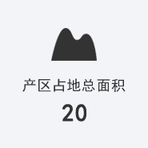
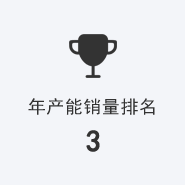
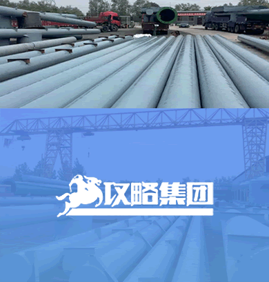

公司专业承揽各种广告工程、建筑钢结构工程、城市景观照明工程，兼营高速公路媒体、城市大屏幕、三面翻、公交站亭、路牌等户外媒体的投资运营业务。
 河北攻略集团下属河北亚圣文化传媒有限公司、河北攻略建筑工程有限公司和河北攻略景观照明科技有限公司三家子公司和雄安、山东两家分公司，取得ISO9001:2015质量管理体系认证企业、钢结构工程专业承包叁级资质企业、河北省一级广告资质企业为保定市广告协会会长单位、保定市企业家协会副会长单位，曾多次被保定市文明办、保定市工商局、保定市广告协会联合评选为“广告行业文明守信先进单位”和“讲信誉、重质量推荐单位”。
攻略集团专业承揽各种广告工程、建筑钢结构工程、城市景观照明工程，兼营高速公路媒体、城市大屏幕、三面翻、公交站亭、路牌等户外媒体的投资运营业务。其业务范围已占据河北、北京、天津、河南、山东、山西、辽宁、陕西、甘肃、湖北、安徽、江苏、内蒙等地市场，业务半径覆盖全国。
河北攻略集团是华北地区单立柱塔型广告牌最具规模、实力生产制作企业。年产能和销量在河北省内本行业位居第一，在全国本行业内排名前三。是河北省唯一一家具有建筑业和广告业企业资质的文化传媒类型的集团公司，拥有专业技术骨干80多人，厂区占地20多亩，从现场踏勘、设计施工、原料采购、半成品加工到现场组装、后期保养，全过程服务，想客户所想，替广告主负责，以确保其结构合理，视觉冲击力强，经久耐用
我公司总结了八大优势做为企业的核心竞争力：一是效率高，一座塔牌四小时现场完成安装；二是昼夜可施工，自备发电设备，机动灵活；三是正规企业集团有限公司实力强、信誉好、可质保十年，安全放心；四是全螺丝组装并用电焊加固双重安全保障；五是现场踏勘，有约必达，因地制宜，优选施工方案；六是全国出售半成品，负责指导安装，可加盟合作；七是分体塔头，可拆解主体框架，以便迁移位置和二次利用；八是提供办理审批手续全套申请资料和所需文件资质。
立足河北，展望全国，我公司每年制作安装单立柱塔型广告牌500多座，其中每年新增加合作广告公司客户近百家，资源共享强强联合，形成了庞大的户外媒体供应和客户资源平台。为您建成后的塔牌媒体还可以通过集团下属传媒分公司纳入我们的媒体库加以整合营销，以扩充您的招商渠道，加速您的招商进程，提高上画率，降低空档期，明智之选，舍我其谁！
海阔凭鱼跃，天高任鸟飞，未来的发展中攻略集团将继续秉承“路虽远，行将必至；事虽难，做将必成”的企业精神。以信为本、以诚待客、以客户发展和员工成就为己任，将“攻略”品牌打造成比肩国际一流企业的行业巨人。